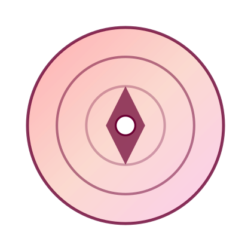

Générateur de motifs
2025 · Projet / Javascript · Interactif / Miniscript
Un générateur de motif en cours de dévelopement, avec des options de densité, de forme et de palette de couleurs.
Jouer / Voir
Licence
CC BY-NC-SA 4.0 — usage non commercial.